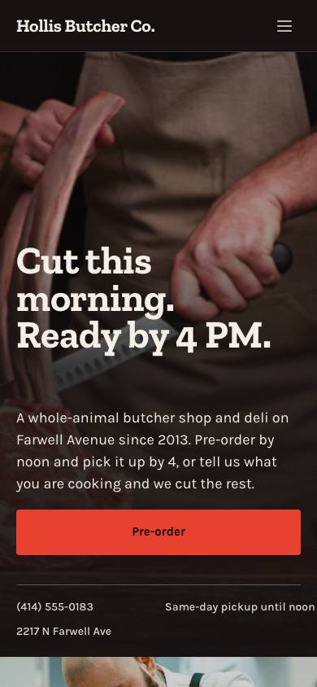

01Empfehlung
Hollis Butcher Co.
Metzgerei · Framer-Vorlage „Cleaver“
- Ein Laden mit Handwerk, vom Einstieg bis zum Fuß durchgezogen: Versprechen als Slab-Satz, darunter Telefon, Abholzeit, Adresse in einer Zeile.
- Ablauf 1 · 2 · 3 in Riesenziffern neben einem echten Bestellzettel in Mono. Wochentafel mit Preisen, Leute hinter der Theke, ein Zitat mit Google-Schnitt, FAQ, Öffnungszeiten-Karte.
- Zilla Slab + Karla + DM Mono: genau unser Schriftbild.
- Dunkel mit Metzgerrot, keine Galerie. Infozeile auf dem Handy läuft rechts aus dem Bild.
Ganzes9
Abdeckung9
Handy9
Schwache Fotos8
Branchen-Mix8
Summe43

Erste 5 SekundenHände bei der Arbeit, ein Satz mit Uhrzeit, roter Knopf, Telefon und Adresse. Man weiß sofort, was es gibt und bis wann. Bei uns: „Heute gebacken. Ab 6 Uhr da.“